Character Art Audit #2 · Gojo · B2–B7
Gojo redraw review
Review each drawing against its previous approved strip and the packed atlas. This gallery preserves five quantized candidate strips and the closest B5 raw strip. Visual approval is separate from the technical holds and from Claude’s later integration checks.
Review status
special v08, fSmash v02, airLight1 v10, fair v02 and fTilt v02.
airLight3 v13 is shown from raw because strict head scale failed. The atlas continues to use approved v12.
54 animations, 254 frames, 48 colors; packer completed with pre-existing unrelated warnings.
Approve or give feedback on each visible version. Approval does not clear a technical hold or authorize integration.
Reply with “Approve all five packed candidates and airLight3 v13 as drawn” or name the versions that need changes.
At a glance
| Batch | Candidate | Scale and packed QA | Review note |
|---|---|---|---|
| B2 | special v08 | Pack pass; head .958; body B .892 | Transition poses f3–f7 now hold the earlier pose scale. |
| B3 | fSmash v02 | Pack pass; head .971; body B .958 | Charge, palm strike and recovery; active palm boxes are measured. |
| B4 | airLight1 v10 technical hold | Head pass 1.00; body B .767 vs jumpFall .889 | Compact torso remains; three image calls used. |
| B5 | airLight3 v13 technical hold | Strict pack failed: head .94, feet 1.05 | Raw strip only; v14 rejected at head 1.14; Part A call budget exhausted. |
| B6 | fair v02 | Pack pass; head .999; body B .880 vs jumpFall .889 | Airborne front kick; folded-pose values match the approved pose envelope. |
| B7 | fTilt v02 | Pack pass; head 1.016; body B .935 | Jacket and trouser width samples now match idle. |
Approved scale references
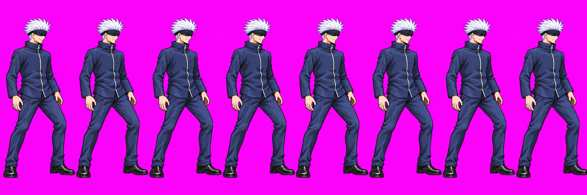


B2 · special v08 packed scale pass
Eight frames; phases and timing are unchanged. The revised f3–f7 poses no longer shrink relative to f0–f2. Head median .958; body-area proxy median .892; feet proxy median 1.091. The strip packs at 48 colors.
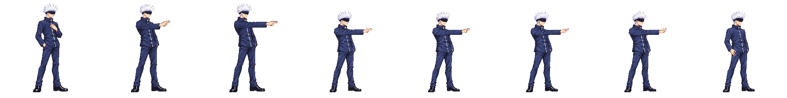
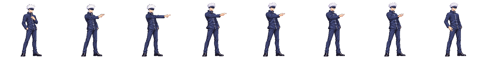
B3 · fSmash v02 packed scale pass
Nine frames; phases [4,2,3], timing and packScale unchanged. Head median .971; body-area proxy median .958; no scale-gate flag. Packed active palm bounds: f4 x190–199/y46–72; f5 x181–192/y46–70. Sidecar boxes are recorded in hitboxes.json.
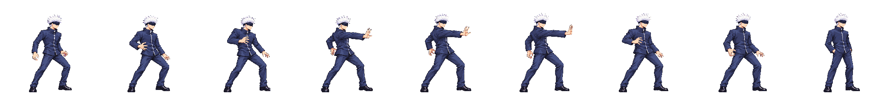
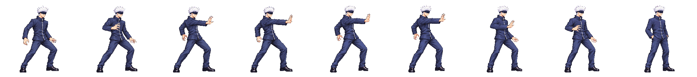
B4 · airLight1 v10 technical body-scale hold
Five frames; strict head gate passes at median 1.00. Body-area proxy median .767 is below approved jumpFall at .889, and the packed comparison still shows a compact torso. Active palm pixels measure x211–223/y69–88 on f1/f2; sidecar boxes are recorded. Three generation calls were used. This drawing is available for visual review, but its technical hold remains.
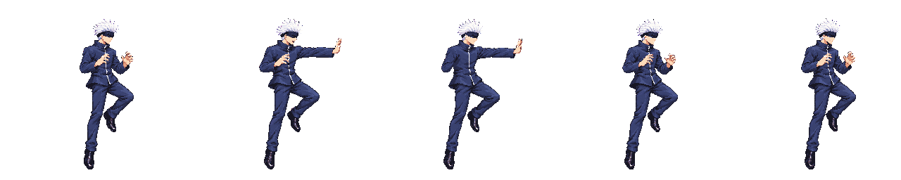
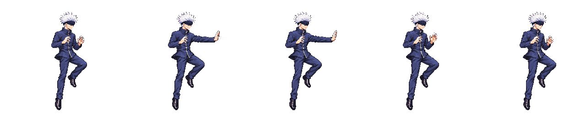
B5 · airLight3 v13 technical hold · not packed
The strict pack failed with head .94 while the feet proxy was 1.05. Therefore v13 is not quantized and is not in the atlas; this comparison shows approved v12 packed beside held raw v13. v14 was rejected after its head probe reached 1.14. Part A used all three calls, so no further generation is included in this batch.
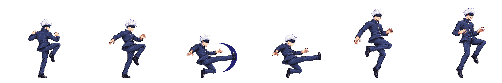
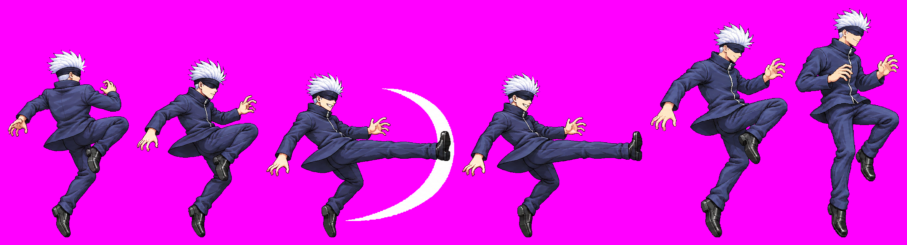
B6 · fair v02 packed scale pass
Six frames; phases [2,2,2], packScale and timing unchanged. Head median .999; feet proxy .96. Body-area proxy median .880 vs approved jumpFall .889. The folded poses track the approved jumpFall pose envelope.
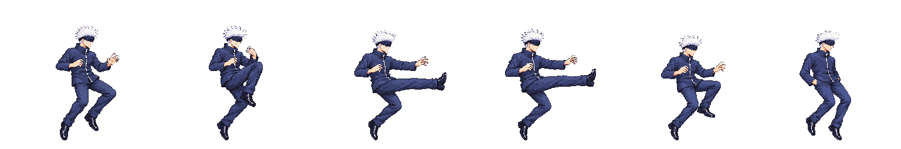
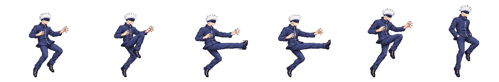
B7 · fTilt v02 packed scale pass
Seven frames; phases [2,2,3], packScale and timing unchanged. Head median 1.016; feet proxy 1.014; body-area proxy median .935. On upright f0/f6, jacket width samples are 36 vs 37 px at y64, 25 vs 25 at y80, 28 vs 27 at y88; trouser runs at y168/176/184/200 are 19/17/19/15 px, matching idle.
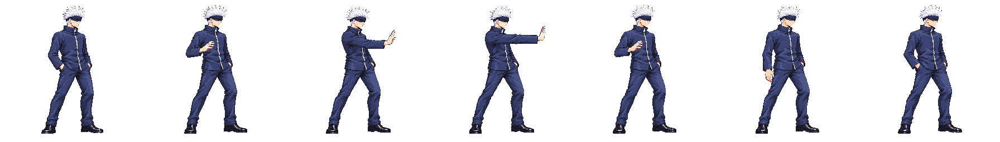
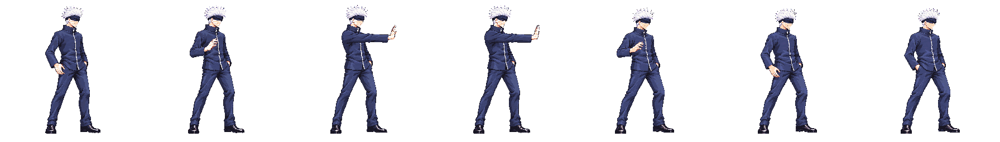
Cross-animation packed evidence
The body sheet includes packed candidates and approved references. Its airLight3 row is approved v12; held v13 is not packed. The lineup likewise shows approved airLight3 v12.
Open body sheet and lineup
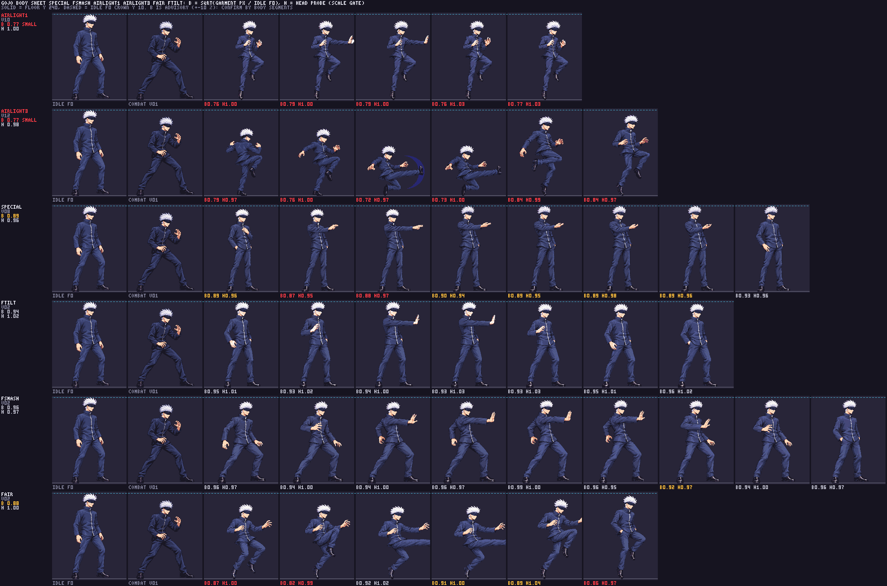
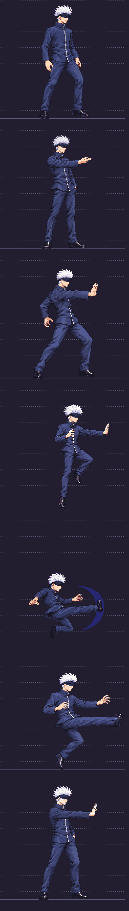
Final packed atlas SHA-256: 178d87fe22dd9da6fbeb6b878f60fe0f1a8498f4ecccf50b70afa4b0a2f78e80. Per-frame head/feet scale data · Body proxy data. These measurements and static checks are not an Astra final anatomy audit. Existing unrelated pack warnings remain.